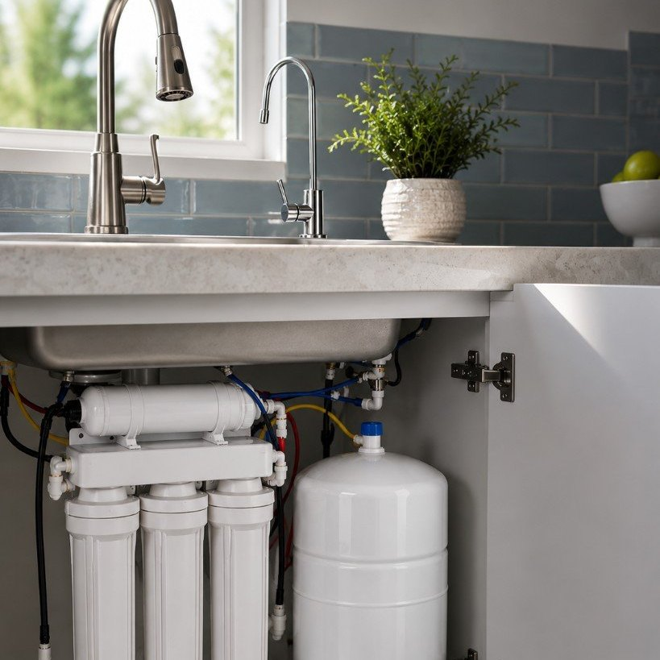

Whole-Home Water Filtration Services
Improve water quality throughout your entire home with filtration systems designed to reduce unwanted contaminants, odors, sediment, and common water concerns from every tap.
Explore serviceCapital Water Co. provides professional water filtration installation for homeowners in Prairieville, LA. From whole house water filtration at the main line to a kitchen reverse osmosis system, we help you choose and install equipment that fits the house you actually live in.
Installed for how you use water
From consultation to completion
Serving Prairieville, LA and surrounding communities.
OUR SERVICES • COMPREHENSIVE WATER FILTRATION SOLUTIONS
These are the systems Prairieville homeowners ask us to install most. Each page explains how the equipment works and what the job typically involves.
Improve water quality throughout your entire home with filtration systems designed to reduce unwanted contaminants, odors, sediment, and common water concerns from every tap.
Explore service
Enjoy cleaner, better-tasting drinking water with advanced reverse osmosis systems that provide high-quality water for drinking, cooking, coffee, ice, and everyday use.
Explore service
Treat private well water concerns such as iron, sulfur odors, sediment, staining, and mineral issues with customized solutions built around your property’s water source.
Explore service
Reduce hard water minerals that can cause buildup on fixtures, dry skin, dull laundry, and strain on plumbing and appliances with a professionally installed water softener system.
Explore service
Improve taste and odor by reducing chlorine, chloramine, and other common water concerns with carbon filtration systems designed for fresher, cleaner water.
Explore service
Improve municipal water quality with treatment systems designed to reduce chlorine taste, odors, sediment, and other common city water concerns found in local homes.
Explore serviceFREQUENTLY ASKED ・ ANSWERS TO YOUR QUESTIONS
Straight answers for homeowners who are ready to install a water filtration system, not shop filter cartridges.
Many whole-house jobs are completed in a day once plumbing access and equipment are confirmed. Under-sink reverse osmosis is often faster. We review shutoff location, drain access, and household water use before we set a schedule.
A whole house water filter treats water at every tap. An RO system is for drinking and cooking at the kitchen. Prairieville families who notice taste at more than one fixture often start with whole-home filtration and add reverse osmosis when kitchen water is the priority.
Yes, when mineral spotting or soap residue is the issue, water softener installation can sit alongside carbon filtration or a whole-home system. We will not add a softener automatically; it has to match what you see in the home.
SERVICE AREA
Capital Water Co. installs water filtration systems throughout Prairieville and nearby Ascension Parish communities such as Gonzales and St. Amant. Prairieville is part of our capital-region coverage around Baton Rouge water filtration installation.
Request a free consultation to talk through water filtration installation for your home.